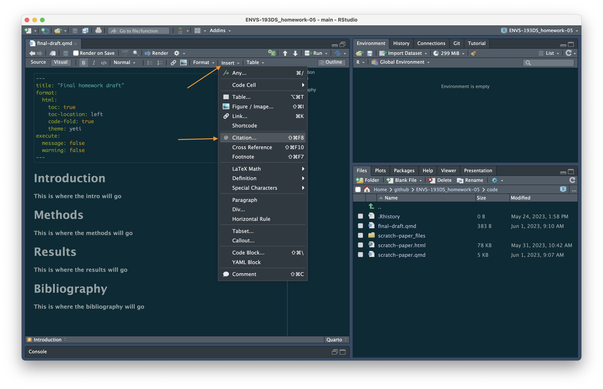
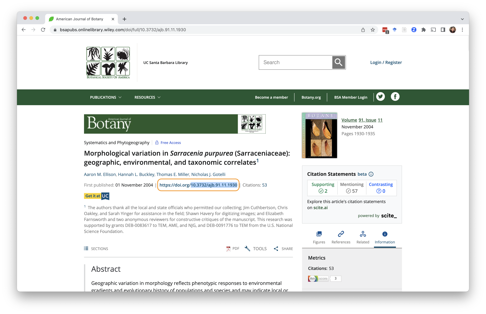
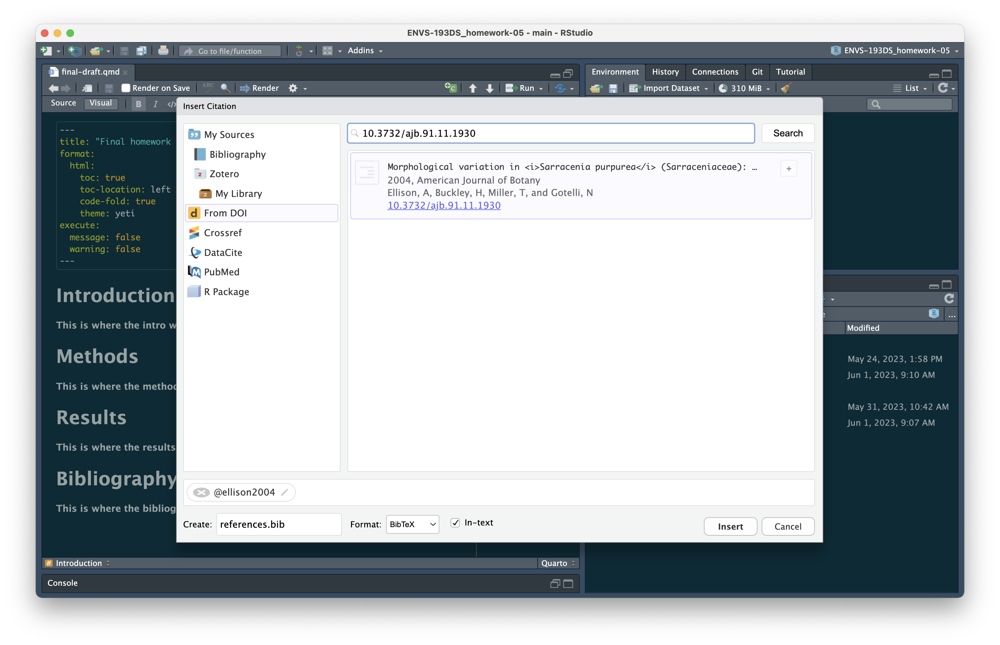
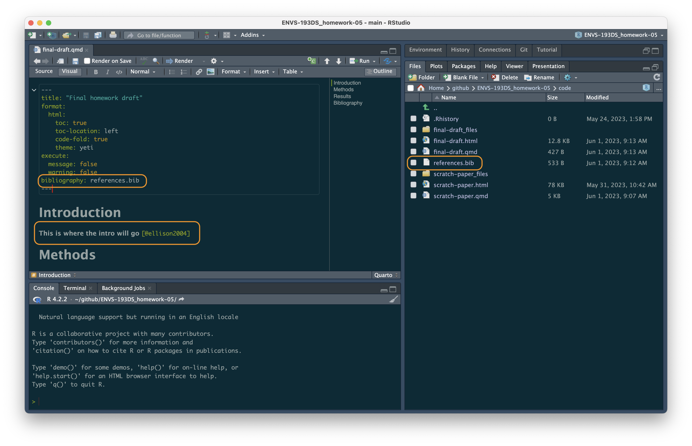
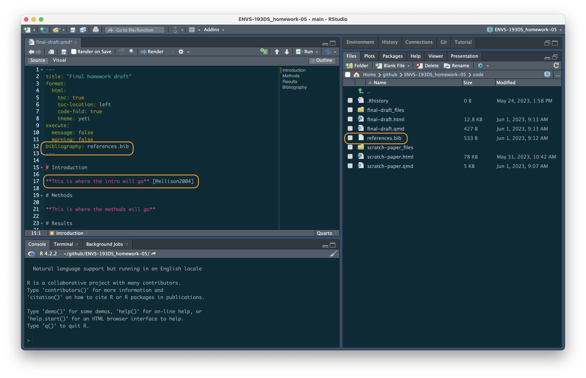
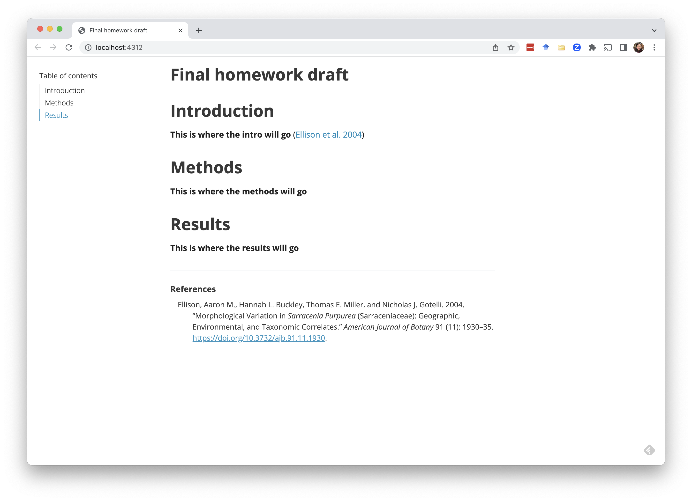

Note: my understanding is that this works in Quarto and RMarkdown. But give it a try!
1. Use the visual editor.

2. Insert a citation.
Navigate to Insert > Citation.

3. Find the paper DOI.
DOI stands for Digital Object Identifier. It’s essentially a permanent identification number for papers, databases, etc. Pretty much all papers have a DOI, and they’re usually at the top of the page somewhere. Copy the text after the “https://doi.org/” part (that’s the DOI).

4. Insert the DOI into the citation box in RStudio.
Select “From DOI”. Paste the DOI into the box and hit “Search”. The paper title, author, and other information should pop up.
At the bottom of the box, there will be an option to create a references.bib file. This is the file where all your citations will live. Note: it is important that the references.bib file is in the same folder as your script - this will happen automatically, but it’s good to double check!
Make sure “In-text” is checked. Hit “Insert”.

5. Marvel at your citation!
Once you look back at your script, you should see 1) something like @authorname in the text where you wanted to insert your citation, 2) bibliography: references.bib in the YAML, and 3) a references.bib file in the folder where your script is. In your script, put that citation in brackets. This is what it looks like in the visual editor:

And in the source editor:

6. Render your document.
Whenever you’re ready, you can render/knit your document. It should have your citation in parentheses and the citation for the paper at the bottom of the page.

Citation
@online{bui2023,
author = {Bui, An},
title = {Citations in {RStudio}},
date = {2023-06-01},
url = {https://an-bui.github.io/ES-193DS-W23/resources/adding-citations.html},
langid = {en}
}